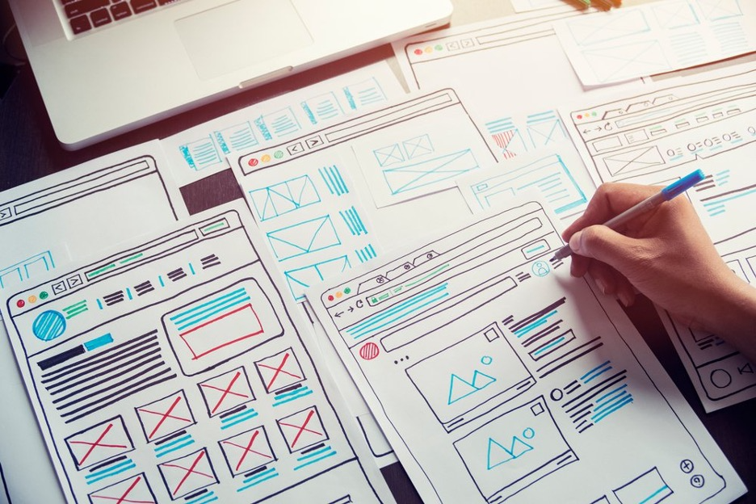

As Drupal 7 reaches its end of life in 2025, businesses that have built their online presence on this platform face a critical decision. They must either undertake a Drupal 7 to 10 migration or explore alternative content management systems (CMS) that better align with their evolving needs. This article examines the key considerations and best options for organizations looking to replace their Drupal 7 websites. It discusses the benefits and drawbacks of a Drupal 7 to 10 migration, explores alternative CMS platforms, and provides expert recommendations on how to ensure a smooth transition.
Drupal 7 End of Life
Since its release in 2011, Drupal 7 has been a popular content management system for web development. It provides a robust and flexible platform for building complex websites and web applications. Drupal 7's strengths include its extensive module ecosystem, powerful content modeling capabilities, and strong security features.
However, Drupal 7 is now showing its age. The platform is based on older technologies that can’t keep up with recent digital advancements. Some of the key limitations of Drupal 7 include:
- Reliance on PHP versions that are becoming increasingly outdated and unsupported
- Limited support for newer web development practices and technologies
- Challenges in scaling and optimizing performance for high-traffic websites
- Lack of built-in support for emerging trends like headless CMS and decoupled architectures
- Does not adequately support responsive design
Moreover, as of January 2025, there will no longer be official support for Drupal 7. This means no security updates or bug fixes, leading to increased vulnerabilities, security breaches, and potential data loss, among other operational risks.
Migration Options for Drupal 7 Users
With Drupal 7 at the end of its life, users who wish to reduce vulnerabilities and maintain adequate functionality have no choice but to make a change. The three main options are:
- A Drupal 7 to 10 migration
- Migrating to an alternative platform other than Drupal
- Building a custom CMS solution
1. Drupal 7 to 10 Migration
Regardless of the option you choose, there is no fast and easy way out. Unfortunately, a Drupal 7 to 10 migration is not as simple as clicking a button for an automated and smooth upgrade—it essentially requires a complete rebuild. While it is a significant undertaking, it offers an opportunity to refresh your site’s design, features, and functionality. It can provide substantial benefits, including:
- Access to the latest Drupal features, security updates, and performance improvements
- Ability to leverage modern web development technologies and practices
- Responsive design for optimal viewing and functionality on all devices—mobile, tablet, and desktop
- Improved scalability and optimization for high-traffic websites
- Support for emerging trends like headless CMS and decoupled architectures
- Longer-term viability and futureproofing of the website
The advantages of a Drupal 7 to 10 migration are far-reaching. Your visitors benefit from improved user experience, enhanced security, and reduced vulnerability to cyber threats. Improved user experience positively impacts your brand reputation. In addition, you benefit from more manageable maintenance and updates going forward. You also potentially save costs by avoiding the need to maintain an outdated platform and mitigate security issues.
A Drupal 7 to 10 migration is, however, not without disadvantages:
- Significant time and resources are required for the migration process
- Potential for disruption to the website and business operations during the migration
- Need to retrain staff or hire new talent with Drupal 10/11 expertise
- Potential compatibility issues with custom modules or third-party integrations
2. Alternative Platform Migration
Migrating from Drupal 7 to an alternative platform like WordPress, Joomla, or a headless CMS may be a more suitable option for some businesses and organizations. Your requirements have likely changed since your original website was built. Migrating to a new platform allows you to leverage a more modern, feature-rich platform better suited to your current web development needs. You can choose a platform with reduced maintenance and hosting costs compared to Drupal. Furthermore, some platforms offer a wider availability of third-party plugins, themes, and integrations.
Potential advantages of switching to a new platform instead of undertaking a Drupal 7 to 10 migration include:
- A faster migration timeline
- Reduced reliance on specialized Drupal expertise
- Opportunity to re-evaluate and optimize the website's architecture and functionality
- Potential for improved performance and scalability, depending on the alternative platform
- Simpler content management and website administration for non-technical users
Disadvantages:
- Potential for compatibility issues with existing integrations and custom functionality
- A steeper learning curve for staff accustomed to the Drupal ecosystem
- Potential for vendor lock-in with the alternative platform
- Potential challenges in migrating and preserving existing content and data
3. Building a Custom Solution
Moving from Drupal 7 to a custom-built CMS can be a substantial and costly undertaking. However, for some businesses and organizations, it will yield the best results and ROI. One noteworthy benefit of switching to a custom CMS is the ability to create a platform tailored to your specific requirements and workflows. You can improve performance, scalability, and security compared to an off-the-shelf CMS.
With reduced reliance on third-party plugins and integrations, you will have more control over your site. You can also incorporate the latest web development technologies and best practices, setting you apart from competitors as an innovative front-runner.
The advantages of a custom CMS include the:
- Potential for lower long-term maintenance and hosting costs compared to a commercial CMS
- Ability to future-proof the website by aligning it with your evolving business needs
- Opportunity to train and upskill internal development teams
- Increased flexibility and control over the website's functionality and user experience
- Improved workflows and operational efficiency
- Improved user experience
As with every option, a custom CMS has some disadvantages that need to be taken into consideration:
- Significant upfront investment of time and resources to design, develop, and deploy the custom CMS
- Potential for a more extended development and migration timeline compared to off-the-shelf solutions
- Ongoing maintenance and updates are required to keep the custom CMS secure and up-to-date
- Reduced access to the extensive plugin and integration ecosystem of commercial CMSs

Alternative CMS Options
While there are many platforms to choose from, WordPress and Backdrop are two popular alternatives to Drupal.
WordPress
WordPress is a leading CMS platform, powering 40% of websites globally. With its massive community of active users and developers, WordPress offers a vast range of plugins and themes. Some key advantages of migrating to WordPress instead of undertaking a Drupal 7 to 10 migration include:
- Simpler content management and website administration, making it more user-friendly for non-technical users
- Faster development and deployment timelines for new websites or migrations
- Lower overall costs, both in terms of development and ongoing maintenance
- Highly customizable for a wide range of industries and business needs
- Built-in SEO optimization features
- A wealth of resources, tutorials, and support
- Its open-source nature ensures ongoing updates and improvements, ensuring your website stays current and secure
- Free open-source version
Limitations to consider with WordPress include:
- Less flexibility and customization compared to building a custom CMS. This is especially important for very complex websites and applications.
- Potential security vulnerabilities due to the large plugin ecosystem
- Weaker data capabilities and scalability compared to Drupal's powerful taxonomy and content types
- Challenges in optimizing performance for high-traffic and very complex websites
Ultimately, the decision to migrate from Drupal 7 to WordPress will depend on your business or organization's specific requirements and priorities. WordPress may be a suitable choice for websites with less complex functionality. For highly complex, high-traffic sites, you may want to weigh up a few more options.
Backdrop CMS
Although not as widely used as WordPress, Backdrop CMS is a good potential alternative to Drupal 7 due to its familiarity with its core functionalities. It is designed to be more user-friendly and accessible while maintaining compatibility with many Drupal modules and themes.
Some of the key advantages of Backdrop CMS compared to Drupal 7 include:
- Improved ease of use and administration for non-technical users
- Continued security updates and bug fixes, ensuring a more secure and reliable platform
- Compatibility with most Drupal modules and themes, simplifying the need for extensive redevelopment
- Lower overall costs, as Backdrop CMS is an open-source, community-driven project
Backdrop CMS limitations to consider include:
- Smaller developer community and ecosystem compared to Drupal or WordPress, potentially limiting access to new features and integrations
- Less active development and innovation compared to the Drupal project, which may impact long-term viability
- Potential challenges in finding Backdrop CMS-specific developers and talent, as it is a less widely adopted platform
- For organizations heavily invested in Drupal 7 and seeking a more gradual migration path, Backdrop may be a viable alternative. However, businesses should carefully evaluate their long-term needs and the trade-offs between Backdrop and other options, such as Drupal 10, WordPress, or a custom platform.
Recommendations From Experts
With much to consider in your website migration, we’ve approached Jay Goldbach, VP of Engineering at Unleashed Technologies, for specialist advice. His expert recommendations for businesses looking to replace their Drupal 7 websites are as follows:
- Consider a more "distributed" approach, where specialized third-party tools and platforms manage different website functions and components rather than a single monolithic CMS. For example, consider using Shopify for an eCommerce store and integrating it with a smaller custom website.
- Leverage APIs and integrations to connect distributed tools and platforms rather than trying to build everything into a single CMS.
- Evaluate your business requirements and choose the "best of breed" tools that work best for your specific needs rather than relying on a single all-in-one CMS.
- Explore headless or decoupled architectures, which separate the front-end presentation from the back-end content management. This can provide more flexibility for custom user experiences.
- Focus on your core business needs and priorities rather than trying to replicate everything in a new CMS. Be open to adopting new tools and technologies that may better serve your evolving requirements.
Considerations for Nonprofits and Small Businesses
Nonprofits, educational institutions, and small businesses tend to have limited budgets and resources, requiring cost-effective migration solutions. While nonprofits may potentially rely on volunteer developers or limited IT staff, educational institutions often have diverse content and functionality requirements and a need for legacy integrations with student information systems or other campus technologies. These organizations all need to maintain critical functionality while minimizing disruption to operations.
Key considerations for a Drupal 7 migration should include:
- Carefully assessing current and future growth requirements to select the most appropriate platform for long-term success
- Exploring options to minimize migration costs, such as open-source solutions or hosted platforms
- Engaging with experienced Drupal or web development partners to guide the migration process
- Allocating sufficient time and resources for a thorough planning and testing phase
- Communicating the migration plan and timeline effectively with stakeholders
Leveraging Technology for Underserved Communities
CMS platforms like Drupal and WordPress enable community-driven projects, lower barriers to entry in web development, and foster worldwide connectivity. These platforms' open-source, community-driven nature facilitates the learning of programming and web development, making these skills more accessible. They also enable global online communities, allowing people worldwide to connect and access information, even in areas with limited infrastructure.
Contributing to the open-source community by mentoring others or sharing knowledge is an important part of this ecosystem. Modern web development's flexibility and specialization create new pathways for career growth, even for those without a traditional programming background. Leveraging these community-driven CMS platforms can be a powerful way to foster digital inclusion and create opportunities for those who may have previously been left behind.
Securing Your Digital Future: Drupal 7 Alternatives for Long-Term Success
As Drupal 7 approaches its end of life, businesses and organizations that have built their online presence on this platform face a critical decision. While a Drupal 7 to 10 migration can provide substantial benefits, it also requires a significant investment of time and resources. Alternatively, exploring other CMS platforms or a custom solution may be a more suitable option depending on your specific requirements and constraints.
Regardless of the path forward, it's essential to carefully evaluate your current and future needs, engage with experienced development partners, and allocate sufficient time and resources for a thorough planning and testing phase. This will ensure a smooth transition that minimizes disruption to your operations and sets your website up for long-term success.
At Unleashed Technologies, we have extensive experience in custom CMS development and migrations. Our team of experts can guide you through the decision-making process, help you select the best platform for your business, and ensure a seamless transition that aligns with your goals and budget. As a leading provider of digital strategy, web development services, and custom software, our full suite of website services will help your business stay agile, innovative, and competitive with a flexible, efficient, and resilient digital infrastructure. Let’s connect.